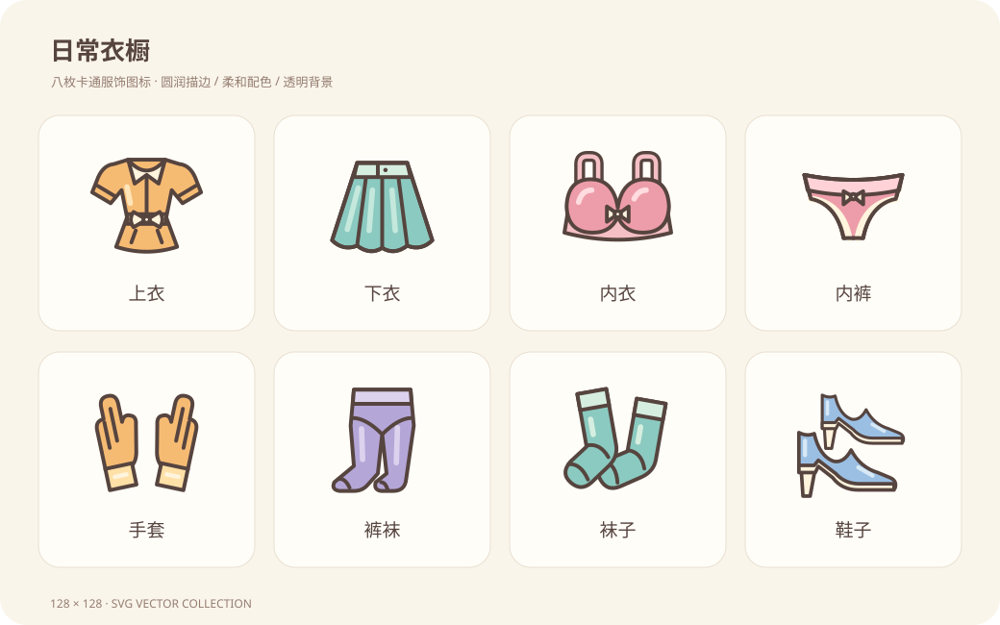

<!doctype html><html lang="zh-CN"><meta charset="utf-8"><meta name="viewport" content="width=device-width, initial-scale=1"><title>日常衣橱 · 卡通图标</title><style>body{margin:0;padding:32px;background:#eee7dc;color:#56443f;font-family:"Microsoft YaHei",sans-serif}main{max-width:1040px;margin:auto}img{width:100%;height:auto}nav{display:flex;flex-wrap:wrap;gap:12px;margin:20px 0}a{color:#56443f;background:#fffdf8;padding:12px 20px;border-radius:14px;text-decoration:none;border:1px solid #ded2c1}a:hover{background:#ffe0a7}a:focus-visible{outline:3px solid #56443f}</style><main><nav aria-label="下载独立 SVG"><a href="top.svg" download="top.svg">上衣 ↓ SVG</a><a href="bottom.svg" download="bottom.svg">下衣 ↓ SVG</a><a href="bra.svg" download="bra.svg">内衣 ↓ SVG</a><a href="panties.svg" download="panties.svg">内裤 ↓ SVG</a><a href="gloves.svg" download="gloves.svg">手套 ↓ SVG</a><a href="tights.svg" download="tights.svg">裤袜 ↓ SVG</a><a href="socks.svg" download="socks.svg">袜子 ↓ SVG</a><a href="shoes.svg" download="shoes.svg">鞋子 ↓ SVG</a></nav></main></html>
